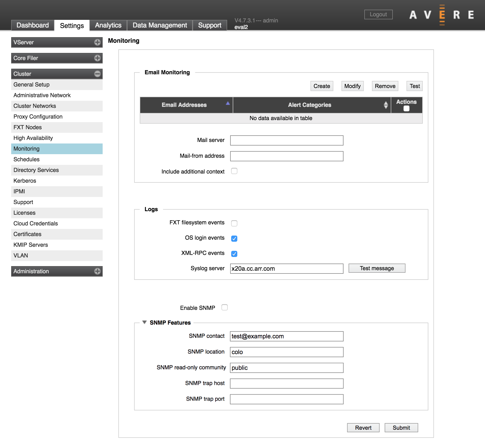
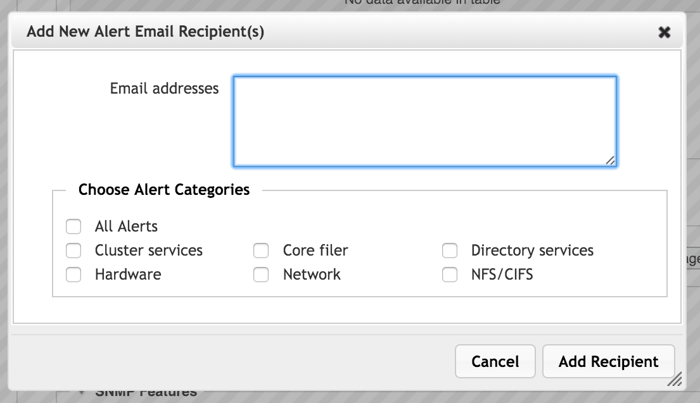
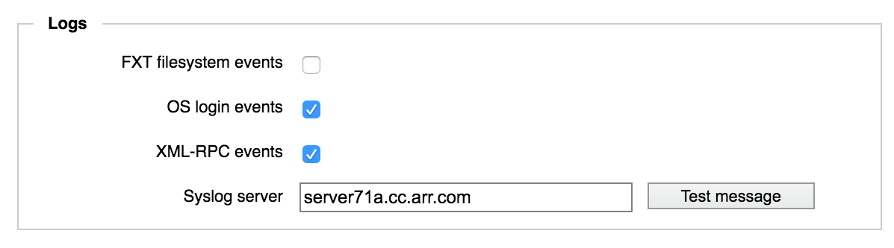

Cluster > Monitoring
On the Monitoring settings page, you can configure methods to see cluster alerts without logging in to the Avere Control Panel.
The system supports three methods for monitoring the cluster externally:
- Email Monitoring - Send important alerts by email.
- External Logging - Send log messages to a remote syslog server.
- SNMP Monitoring - Allow a remote monitor to query the cluster to gather statistics and other messages, including alerts. This option can be used to generate SNMP traps.
After making any changes, remember to use the Submit button to save the new settings.
Email Monitoring
Use the Email Monitoring section to set up email alerts about cluster state.
Click the Create button to add a new alert.
{kind=link}
Enter the email recipients (one email address or a comma-separated list of addresses) in the Email addresses field. Use the checkboxes to select the type of alerts to send.
Click Add Recipient to create the alert.
Select an alert in the table’s Actions column to use the Modify, Remove, or Test buttons.
Note
You cannot change the set of email addresses in an alert. Delete the old alert and create a new one if you want to include different recipients.
In the Mail server field, enter the SMTP server (and, optionally, the port) to use for sending mail.
In the Mail-from address field, specify the return address to use.
The Include additional context checkbox causes lower severity alerts to be included in the emails to help with analysis.
Click Submit after making changes, or Revert to go back to the last saved configuration.
External Logging
The cluster can send event messages to an external syslog server. Use the Logs section of the monitoring page to specify the server and to set options for what is logged.
{kind=link}
In the Syslog server field, enter the domain name or IP address of the server that will collect the cluster log messages. You have the option to include a specific port.
The syslog server must exist before you specify it here.
Check the boxes to select the type of events to send to the external log. All of these options are enabled by default if you specify a remote syslog server; most administrators should consider disabling filesystem event logging to avoid excessive traffic.
Log options include the following:
- FXT filesystem events - Forwards FXT filesystem messages to the remote monitoring server. This option generates a high volume of log entries. Note that this option does not log all filesystem events (it does not log user filesystem access); it logs a subset of administrative and debugging traffic.
- OS login events - Forwards all SSH and command-line login event messages to the remote monitoring server. (This option does not forward messages from Avere Control Panel sessions.)
- XML-RPC events - Forwards detailed API call logs, including failures, to the remote monitoring server. XML-RPC events now include the username, remote IP address, method name and arguments (with sensitive values masked for security), and results. Some routine XML-RPC events (frequently invoked through the Avere Control Panel) are not logged.
The table below gives the log facility and level for each configuration option for use in syslog filters.
| Log option | Facility | Level |
|---|---|---|
| FXT Filesystem Events | local7 | info |
| OS Login Events | auth | info |
| XML-RPC Events | local6 | notice |
The Test message button sends a short message to the remote syslog server so that you can verify that the server is receiving information from the cluster.
Click Submit to save changes, or Revert to abandon the new settings.
SNMP Monitoring
Avere OS exposes a Simple Network Management Protocol (SNMP) management information base (MIB) that can be used to monitor the cluster.
Download Avere’s SNMP MIBs from the Downloads section of the support portal (http://www.averesystems.com/about-us/avere-support). Avere OS supports SNMPv1 and SNMPv2c.
Click the Enable SNMP checkbox to turn this feature on. In the SNMP Features section, you can provide the following values to customize the information:
- SNMP contact - A contact person for the cluster (typically a system administrator)
- SNMP location - The physical location of the cluster; used to help identify the system
- SNMP read-only community - The community string to use to authenticate read-only access (note that SNMP sends this string in cleartext during use)
- SNMP trap host - The name or IP address of the manager that receives trap notifications
- SNMP trap port - The port number used for receiving trap notifications
Click Submit to save changes, or Revert to abandon the new settings.